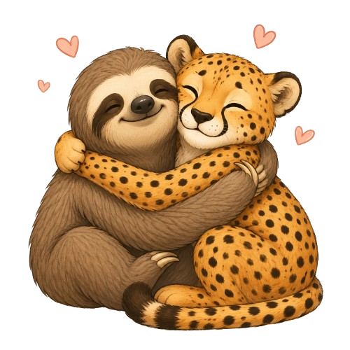

Pametno učenje, manje stresa.
Unesi ime, izaberi mod i iskoristi kartice ispod — filtriraju se klikom na lijevi meni.

Savjeti i resursi
Šest kartica — klik na filter prikazuje samo odgovarajuće (JavaScript).
Pomodoro
25:00
Motivisan mod: 50/10 (duže sesije)